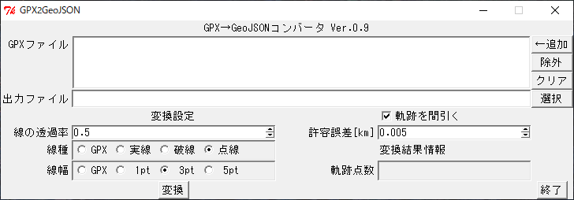
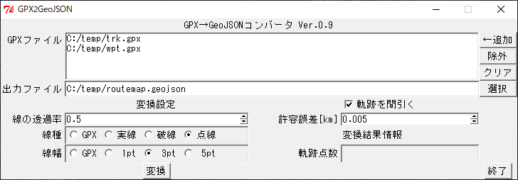
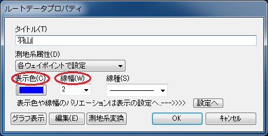

GPX2GeoJSON（GPX→GeoJSONコンバータ）は、カシミール3Dで保存したGPXファイル（拡張子 .gpx）を、各種ウェブ地図に上乗せして表示できるGeoJSONファイル（拡張子 .geojson）に変換するデスクトップアプリケーションです。Windows 10、macOS、Linuxで動作します。2008年1月から公開しているGPX2JSGI（GPX→KMLコンバータ）と同様、作者のホームページ（あにねこ登山日誌）の山行記録に添えるルート地図を作成するためのユーティリティとして開発したものです。当初は上乗せデータとしてJSGIファイル、2013年12月からはKMLファイルを利用していましたが、主流になりつつあるGeoJSONファイルへ2019年2月に移行しました。その際に、コンセプトはGPX2JSGIから引き継ぎつつ、全く新規に開発したアプリケーションです。
Windows 10で動作します。また、macOSやLinuxなど、標準でPerlが動く環境ならば動作し、GUIの他、CLI（コマンドラインインターフェース）でも動作します。EXEファイルへのパッケージ化にはStrawberry Perl for WindowsのPAR::Packerツールキットを利用しています。なお、動作させるだけならばPerlのインストールは必要ありません。トラックポイントの間引きで外部プログラムのGPSBabelを利用しているため、別途入手してインストールする必要があります。
GPX2GeoJSONのソフトウェアおよび付属文書の著作権は、作者のあにねこ（anineco@nifty.com）が保持します。本ソフトウェアはMITライセンスに基づいて無償で提供され、複製を入手した人は商用・非商用を問わず自由に使用、複写、変更、結合、掲載、配布することができます。本ソフトウェアの複製または変更した物を掲載、配布する場合は、ソースコード中の著作権表示は削除できません。
本ソフトウェアは無保証です。特に、変換結果のデータ形式の正当性・正確性については保証しません。作者は本ソフトウェアに起因するいかなる義務（サポートを含む）についても責任を負いません。
まず、GitHubからGPX2GeoJSONの最新版をダウンロードします。https://github.com/anineco/gpx2geojsonにアクセスするとGPX2GeoJSONのリポジトリ画面が開きます。Clone or downloadをクリックすると図1の小窓が開き、続いてDownload ZIPをクリックするとダウンロードが始まります。
ダウンロードしたZIPファイルを適当なフォルダの下で展開すると、下記のファイル（2019-06-15現在）が配置されます。このうち、実行に必要なファイルは赤字で示したgpx2geojson.exeとiconlut.pmの2つです。この2つのファイルはどこに置いても動作しますが、常に同じフォルダ内に配置する必要があります。
gpx2geojson ├── gpx2geojson.exe （実行形式ファイル） ├── iconlut.pm （アイコン変換表） ├── iconlut_anineco.pm（アイコン変換表：あにねこ登山日誌） ├── docs/* （GitHub Pages） ├── gpx2geojson.pl （Perlスクリプト） ├── pl2exe.cmd （EXE化バッチファイル） ├── kml2geojson.pl （KML→GeoJSONコンバータ） └── example/* （サンプルデータ）
GPSBabelは、公式ウェブサイトhttps://www.gpsbabel.org/からWindows用（2019-06-15現在、GPSBabel-1.6.0-Setup-exe）をダウンロードしてインストールして下さい。インストール先は通常'C:\Program Files (x86)\GPSBabel'で、GPX2GeoJSONはここに外部プログラムgpsbabel.exeがあることを前提として動作します。
GPX2GeoJSONのアンインストールは、展開したフォルダをまるごと削除して下さい。GPX2GeoJSONを一度起動して終了すると、ホームフォルダ直下に.gpx2geojsonというファイルが作成されます。アンインストールの際には、このファイルも削除して差し支えありません。
gpx2geojson.exe（のアイコン）をクリックすると、GUIが起動して図1のような窓が開きます。

図1 GUI画面
変換したいGPXファイル（1個以上）を、右側の『←追加』ボタンを押してファイル選択ダイアログを開き、「GPXファイル」のリストに追加します。ファイル選択ダイアログでは、ControlキーやShiftキーを押しながらクリックすることにより、複数ファイルを同時に選択することができます。リスト中のファイルをマウスで選択して『除外』ボタンを押すと、リストから取り除くことが出来ます。また、『クリア』ボタンを押すと、リストは空になります。
次に、「出力ファイル」を右側の『選択』ボタンを押して指定します。拡張子を指定しなかった場合は、自動的に.geojsonが付加されます。
線の透過率は元のGPXファイルにはない情報です。スピンボックスで0.0〜1.0の値を0.1刻みで指定します。線種と線幅は元のGPXファイルに含まれる情報です。これをそのままGeoJSONファイルに反映させる場合には、『GPX』にチェックを入れます。その他の場合、指定した値で上書きされます。
トラックポイントを間引く場合は、「軌跡を間引く」欄にチェックを入れて下さい。すると、その下の「許容誤差」のスピンボックスが編集可能になるので、正の数値（単位はkm）を設定します。間引きには、cross track errorアルゴリズムを用いたGPSBabelのSimplifyフィルタを利用しています。許容誤差を大きくすると間引かれる点数が増えますが、軌跡の細部の形状が失われるので、調節が必要です。最初は初期設定値（0.005km）で試してみて下さい。

図2 変換準備完了後のGUI画面
全ての必要項目を設定したのちに『変換』ボタンを押すと、変換結果が「出力ファイル」で指定したファイルに出力されます。変換が成功すると、変換後のトラックポイント数が「軌跡点数」の欄に表示されます。『終了』ボタンを押すと、プログラムを終了します。
変換仕様については、GPX2JSGIの仕様をほぼそのまま踏襲しています。
カシミール3Dの「ウェイポイント/ルートポイントのプロパティ」（図4）の設定項目が、地理院地図でどのように表示されるかを説明します。

図4 ウェイポイント/ルートポイントのプロパティ
package iconlut;
use strict;
use warnings;
sub iconUrl {
my $icon = shift; # kashmir3d:icon
return "https://map.jpn.org/icon/$icon.png";
}
sub iconSize {
my $icon = shift; # kashmir3d:icon
return [24, 24];
}
sub iconAnchor {
my $icon = shift; # kashmir3d:icon
return [12, 12];
}
1;
https://map.jpn.org/に設置済のシンボル画像のセットにアクセスします。この画像セットは、カシミール3Dのアイコンの全てに対応しています。カシミール3Dの「ルートデータプロパティ」（図5）の設定項目が、地理院地図でどのように表示されるかを説明します。

図5 ルートデータプロパティ
カシミール3Dでは、ルート上の各ポイントに対しても図4の「ウェイポイントのプロパティ」を開いて、全く同様のプロパティを設定することができます。ルートポイントもウェイポイントと同様にGeoJSON形式に変換されました。ただし、アイコンが「地名」グループの「なし」（コード番号903001）のルートポイントは例外で、変換されません（「なし」アイコンのウェイポイントは変換されます）。ルートポイントを変換したくない場合は、アイコンを「なし」に設定して下さい。複数のルートポイントを選択してから「ウェイポイントのプロパティ」を開くと、アイコンの一括変更が可能です。
カシミール3Dの「トラックデータプロパティ」（図6）の設定項目が、地理院地図でどのように表示されるかを説明します。

図6 トラックデータプロパティ
| 2019-07-07 | GPX2GeoJSON Ver.0.9 公開。 |